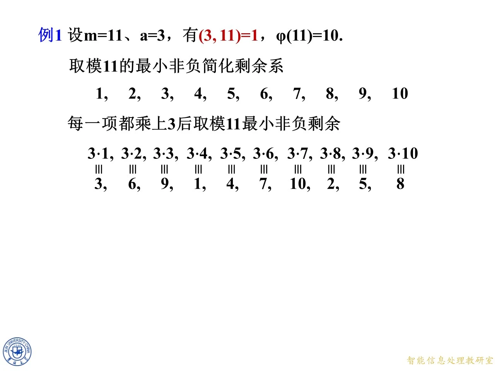
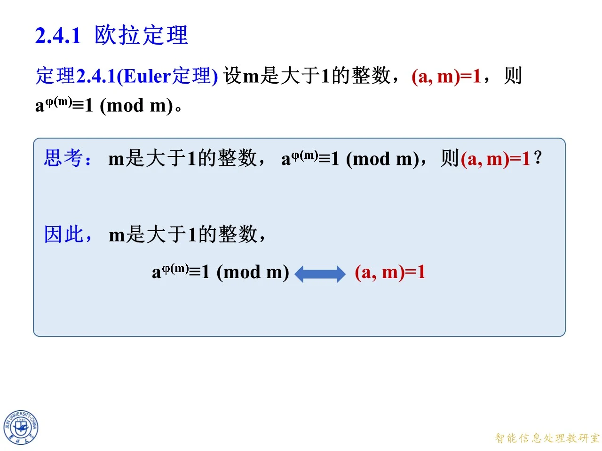
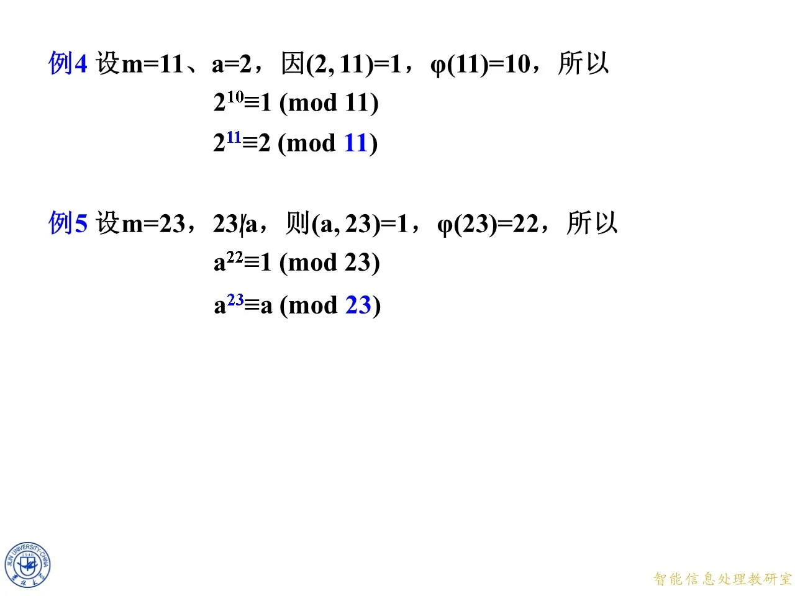

本节讲欧拉定理，它是第二章同余理论里第一个真正能把指数"降下来"的工具，位置在 2.3 节简化剩余系之后、费马小定理与 Wilson 定理之前。课件先用上一节的定理 2.3.4 把简化剩余系整体搬一遍，顺势推出欧拉定理，再回头验证它的逆命题、拿它去解一次同余式，最后用模六百六十七的一套小模型演示它如何支撑 RSA 的加解密还原。学完这一节，你应该能在给定模数与底数后判断能否用欧拉定理降指数，并知道不互素时它会失效。
2.4.1 的引入：先把定理 2.3.4 搬出来
◆ p.363 ｜2.4 欧拉定理、费马小定理和 Wilson 定理
本章目录页，2.4 节被切成三块：2.4.1 欧拉定理、2.4.2 费马小定理、2.4.3 Wilson 定理。整页只有标题，没有实质数学内容，属于本课的封面页。本讲解对应其中 2.4.1，也就是欧拉定理这一块；费马小定理与 Wilson 定理各自有独立讲解，这里只在推理需要时顺带提一句。
◆ p.364-370 ｜（回顾）定理 2.3.4
这一组七帧是同一个幻灯片的分步动画，逐帧加上一行推导，最终完整呈现欧拉定理的证明骨架。它回顾的是上一节的定理 2.3.4：
设 m m m ( a , m ) = 1 (a,m)=1 ( a , m ) = 1 k k k m m m a k ak ak m m m
逐帧展开的逻辑是这样：模 m m m φ ( m ) \varphi(m) φ ( m ) r 1 , r 2 , … , r φ ( m ) r_1,r_2,\ldots,r_{\varphi(m)} r 1 , r 2 , … , r φ ( m ) m m m a r 1 , a r 2 , … , a r φ ( m ) ar_1,ar_2,\ldots,ar_{\varphi(m)} a r 1 , a r 2 , … , a r φ ( m ) m m m m m m i i i j j j
a r i ≡ r j ( m o d m ) . ar_i\equiv r_j\pmod m. a r i ≡ r j ( mod m ) .
注意这里的关键是个数相同 且每个元素都与 m m m ，这才保证了集合层面的相等，而不仅仅是包含关系。接着把两两配对的同余式全部乘起来：
( a r 1 ) ( a r 2 ) ⋯ ( a r φ ( m ) ) ≡ r 1 r 2 ⋯ r φ ( m ) ( m o d m ) . (ar_1)(ar_2)\cdots(ar_{\varphi(m)})\equiv r_1r_2\cdots r_{\varphi(m)}\pmod m. ( a r 1 ) ( a r 2 ) ⋯ ( a r φ ( m ) ) ≡ r 1 r 2 ⋯ r φ ( m ) ( mod m ) .
左边共有 φ ( m ) \varphi(m) φ ( m ) a a a
a φ ( m ) r 1 r 2 ⋯ r φ ( m ) ≡ r 1 r 2 ⋯ r φ ( m ) ( m o d m ) . a^{\varphi(m)}r_1r_2\cdots r_{\varphi(m)}\equiv r_1r_2\cdots r_{\varphi(m)}\pmod m. a φ ( m ) r 1 r 2 ⋯ r φ ( m ) ≡ r 1 r 2 ⋯ r φ ( m ) ( mod m ) .
这一步只是重新排列乘法的顺序，同余式两边同时乘同一个整数仍然同余，所以合法。接着课件补了一个容易被跳过的前提：因为每个 r i r_i r i m m m ( r i , m ) = 1 (r_i,m)=1 ( r i , m ) = 1 m m m m m m
( r 1 r 2 ⋯ r φ ( m ) , m ) = 1. (r_1r_2\cdots r_{\varphi(m)},\,m)=1. ( r 1 r 2 ⋯ r φ ( m ) , m ) = 1.
有了这条，同余式两端才能同时消去 r 1 r 2 ⋯ r φ ( m ) r_1r_2\cdots r_{\varphi(m)} r 1 r 2 ⋯ r φ ( m )
◆ p.371 ｜例 1（该帧插在证明动画中间）
按页码顺序，这一帧被插在了定理 2.3.4 的动画中间，内容却是后面的例 1：设 m = 11 m=11 m = 11 a = 3 a=3 a = 3 ( 3 , 11 ) = 1 (3,11)=1 ( 3 , 11 ) = 1 φ ( 11 ) = 10 \varphi(11)=10 φ ( 11 ) = 10 11 11 11 1 , 2 , 3 , 4 , 5 , 6 , 7 , 8 , 9 , 10 1,2,3,4,5,6,7,8,9,10 1 , 2 , 3 , 4 , 5 , 6 , 7 , 8 , 9 , 10 3 3 3 11 11 11
3 ⋅ 1 , 3 ⋅ 2 , … , 3 ⋅ 10 ⟶ 3 , 6 , 9 , 1 , 4 , 7 , 10 , 2 , 5 , 8. 3\cdot1,\,3\cdot2,\,\ldots,\,3\cdot10\;\longrightarrow\;3,6,9,1,4,7,10,2,5,8. 3 ⋅ 1 , 3 ⋅ 2 , … , 3 ⋅ 10 ⟶ 3 , 6 , 9 , 1 , 4 , 7 , 10 , 2 , 5 , 8.
本帧只画了"乘 3 再取余"这张对照表，还没有做乘法验证，属于例 1 的第一帧，完整演算见后文 p.381-382 的页块。
◆ p.372-376
这五帧回到定理 2.3.4 的回顾版式，接着 p.370 停下的位置往下走：先补出"于是 (ar_1)(ar_2) 乘起来"那一行，再提公因式、把两组乘积用红绿高亮对齐，最后写出"又因 (r_i,m)=1，所以 (r_1r_2 乘积, m)=1"，并把"同余式两端同时消去"这半句收尾。也就是说，p.371 的例 1 页被插在了这份回顾动画的中间，讲完例子再回到证明，逐项推导同 p.364-370 说明过的，这里不再重复。
◆ p.377-378
这两帧把证明收尾：消去 r 1 r 2 ⋯ r φ ( m ) r_1r_2\cdots r_{\varphi(m)} r 1 r 2 ⋯ r φ ( m )
a φ ( m ) ≡ 1 ( m o d m ) . a^{\varphi(m)}\equiv1\pmod m. a φ ( m ) ≡ 1 ( mod m ) .
两帧的画面到此只剩红色大字 a φ ( m ) ≡ 1 ( m o d m ) a^{\varphi(m)}\equiv1\pmod m a φ ( m ) ≡ 1 ( mod m ) 简化剩余系乘 a a a a φ ( m ) ⋅ a^{\varphi(m)}\cdot a φ ( m ) ⋅ ≡ \equiv ≡ a φ ( m ) ≡ 1 a^{\varphi(m)}\equiv1 a φ ( m ) ≡ 1 。整条链上唯一"重"的工具就是上一节的定理 2.3.4，其余全是同余的乘法性质与消去律。

课件原图 · 9月18日授课 · 第 371 页 查看前后已收录原页 → 定理 2.4.1（Euler 定理）
◆ p.379-380 ｜定理 2.4.1（Euler 定理）
定理表述：设 m m m ( a , m ) = 1 (a,m)=1 ( a , m ) = 1
a φ ( m ) ≡ 1 ( m o d m ) . a^{\varphi(m)}\equiv1\pmod m. a φ ( m ) ≡ 1 ( mod m ) .
与上一节的定理 2.3.4 相比，m m m m = 1 m=1 m = 1 φ ( 1 ) = 1 \varphi(1)=1 φ ( 1 ) = 1
课件的证明就是把 p.364-378 那一轮回顾原样落地，七步一条不落：
取 r 1 , r 2 , … , r φ ( m ) r_1,r_2,\ldots,r_{\varphi(m)} r 1 , r 2 , … , r φ ( m ) m m m
因 ( a , m ) = 1 (a,m)=1 ( a , m ) = 1 a r 1 , a r 2 , … , a r φ ( m ) ar_1,ar_2,\ldots,ar_{\varphi(m)} a r 1 , a r 2 , … , a r φ ( m ) m m m
两系元素个数都是 φ ( m ) \varphi(m) φ ( m ) a r i ≡ r j ( m o d m ) ar_i\equiv r_j\pmod m a r i ≡ r j ( mod m )
逐个相乘：( a r 1 ) ( a r 2 ) ⋯ ( a r φ ( m ) ) ≡ r 1 r 2 ⋯ r φ ( m ) ( m o d m ) (ar_1)(ar_2)\cdots(ar_{\varphi(m)})\equiv r_1r_2\cdots r_{\varphi(m)}\pmod m ( a r 1 ) ( a r 2 ) ⋯ ( a r φ ( m ) ) ≡ r 1 r 2 ⋯ r φ ( m ) ( mod m )
左边提公因式写成 a φ ( m ) r 1 r 2 ⋯ r φ ( m ) ≡ r 1 r 2 ⋯ r φ ( m ) ( m o d m ) a^{\varphi(m)}r_1r_2\cdots r_{\varphi(m)}\equiv r_1r_2\cdots r_{\varphi(m)}\pmod m a φ ( m ) r 1 r 2 ⋯ r φ ( m ) ≡ r 1 r 2 ⋯ r φ ( m ) ( mod m )
又因 ( r i , m ) = 1 (r_i,m)=1 ( r i , m ) = 1 i = 1 , 2 , … , φ ( m ) i=1,2,\ldots,\varphi(m) i = 1 , 2 , … , φ ( m ) ( r 1 r 2 ⋯ r φ ( m ) , m ) = 1 (r_1r_2\cdots r_{\varphi(m)},m)=1 ( r 1 r 2 ⋯ r φ ( m ) , m ) = 1
由消去律两端约去 r 1 r 2 ⋯ r φ ( m ) r_1r_2\cdots r_{\varphi(m)} r 1 r 2 ⋯ r φ ( m ) a φ ( m ) ≡ 1 ( m o d m ) a^{\varphi(m)}\equiv1\pmod m a φ ( m ) ≡ 1 ( mod m ) ■ \blacksquare ■
第 6 步是这个证明里最容易漏的一步，也是考试最常扣分的地方：如果不说清乘积与模互素，第 7 步的"约去"就没有依据。同余式的约去律要求约去的因子与模互素，而乘积与模互素这一点并非自动成立，必须由每个 r i r_i r i m m m
拓展 （课件外补充）：证明里用到的两件事——"乘 a a a m m m ( a , m ) = 1 (a,m)=1 ( a , m ) = 1 必要条件 而非装饰：m = 11 m=11 m = 11 a = 3 a=3 a = 3 φ ( 11 ) = 10 \varphi(11)=10 φ ( 11 ) = 10 3 10 ≡ 1 3^{10}\equiv1 3 10 ≡ 1 m = 11 m=11 m = 11 a = 0 a=0 a = 0 0 10 ≡ 0 ≢ 1 0^{10}\equiv0\not\equiv1 0 10 ≡ 0 ≡ 1 ( 0 , 11 ) = 11 ≠ 1 (0,11)=11\neq1 ( 0 , 11 ) = 11 = 1

课件原图 · 9月18日授课 · 第 386 页 查看前后已收录原页 → 例 1：模 11 下把简化剩余系乘 3 再验证 3 10 ≡ 1 3^{10}\equiv1 3 10 ≡ 1
◆ p.381-382 ｜例 1
题目：设 m = 11 m=11 m = 11 a = 3 a=3 a = 3 ( 3 , 11 ) = 1 (3,11)=1 ( 3 , 11 ) = 1 φ ( 11 ) = 10 \varphi(11)=10 φ ( 11 ) = 10 3 10 ≡ 1 ( m o d 11 ) 3^{10}\equiv1\pmod{11} 3 10 ≡ 1 ( mod 11 )
思路：完全照定理的证明走——把简化剩余系整体乘 3，看是不是还是同一组数（只是换了个顺序），再把两边的乘积摆成等式约掉公因子。
第一步，写出模 11 11 11 11 11 11 1 1 1 10 10 10 11 11 11 φ ( 11 ) = 10 \varphi(11)=10 φ ( 11 ) = 10
1 , 2 , 3 , 4 , 5 , 6 , 7 , 8 , 9 , 10. 1,\,2,\,3,\,4,\,5,\,6,\,7,\,8,\,9,\,10. 1 , 2 , 3 , 4 , 5 , 6 , 7 , 8 , 9 , 10.
第二步，每一项乘 3 3 3 11 11 11 3 ⋅ 1 = 3 3\cdot1=3 3 ⋅ 1 = 3 3 ⋅ 2 = 6 3\cdot2=6 3 ⋅ 2 = 6 3 ⋅ 3 = 9 3\cdot3=9 3 ⋅ 3 = 9 3 ⋅ 4 = 12 ≡ 1 3\cdot4=12\equiv1 3 ⋅ 4 = 12 ≡ 1 3 ⋅ 5 = 15 ≡ 4 3\cdot5=15\equiv4 3 ⋅ 5 = 15 ≡ 4 3 ⋅ 6 = 18 ≡ 7 3\cdot6=18\equiv7 3 ⋅ 6 = 18 ≡ 7 3 ⋅ 7 = 21 ≡ 10 3\cdot7=21\equiv10 3 ⋅ 7 = 21 ≡ 10 3 ⋅ 8 = 24 ≡ 2 3\cdot8=24\equiv2 3 ⋅ 8 = 24 ≡ 2 3 ⋅ 9 = 27 ≡ 5 3\cdot9=27\equiv5 3 ⋅ 9 = 27 ≡ 5 3 ⋅ 10 = 30 ≡ 8 3\cdot10=30\equiv8 3 ⋅ 10 = 30 ≡ 8
3 , 6 , 9 , 1 , 4 , 7 , 10 , 2 , 5 , 8. 3,\,6,\,9,\,1,\,4,\,7,\,10,\,2,\,5,\,8. 3 , 6 , 9 , 1 , 4 , 7 , 10 , 2 , 5 , 8.
把这两行对照着看，第二行恰好是 1 1 1 10 10 10
第三步，把两行分别连乘。左边是 ( 3 ⋅ 1 ) ( 3 ⋅ 2 ) ⋯ ( 3 ⋅ 10 ) (3\cdot1)(3\cdot2)\cdots(3\cdot10) ( 3 ⋅ 1 ) ( 3 ⋅ 2 ) ⋯ ( 3 ⋅ 10 ) 3 ⋅ 6 ⋅ 9 ⋯ 5 ⋅ 8 3\cdot6\cdot9\cdots5\cdot8 3 ⋅ 6 ⋅ 9 ⋯ 5 ⋅ 8
( 3 ⋅ 1 ) ( 3 ⋅ 2 ) ( 3 ⋅ 3 ) ⋯ ( 3 ⋅ 9 ) ( 3 ⋅ 10 ) ≡ 3 ⋅ 6 ⋅ 9 ⋯ 5 ⋅ 8 ( m o d 11 ) . (3\cdot1)(3\cdot2)(3\cdot3)\cdots(3\cdot9)(3\cdot10)\equiv3\cdot6\cdot9\cdots5\cdot8\pmod{11}. ( 3 ⋅ 1 ) ( 3 ⋅ 2 ) ( 3 ⋅ 3 ) ⋯ ( 3 ⋅ 9 ) ( 3 ⋅ 10 ) ≡ 3 ⋅ 6 ⋅ 9 ⋯ 5 ⋅ 8 ( mod 11 ) .
右边那串重排后其实就是 1 ⋅ 2 ⋅ 3 ⋯ 9 ⋅ 10 1\cdot2\cdot3\cdots9\cdot10 1 ⋅ 2 ⋅ 3 ⋯ 9 ⋅ 10
3 10 ( 1 ⋅ 2 ⋅ 3 ⋯ 9 ⋅ 10 ) ≡ 1 ⋅ 2 ⋅ 3 ⋯ 9 ⋅ 10 ( m o d 11 ) . 3^{10}(1\cdot2\cdot3\cdots9\cdot10)\equiv1\cdot2\cdot3\cdots9\cdot10\pmod{11}. 3 10 ( 1 ⋅ 2 ⋅ 3 ⋯ 9 ⋅ 10 ) ≡ 1 ⋅ 2 ⋅ 3 ⋯ 9 ⋅ 10 ( mod 11 ) .
第四步，约去公因子 1 ⋅ 2 ⋯ 10 = 10 ! = 3628800 1\cdot2\cdots10=10!=3628800 1 ⋅ 2 ⋯ 10 = 10 ! = 3628800 10 ! 10! 10 ! 2 , 3 , 5 , 7 2,3,5,7 2 , 3 , 5 , 7 11 11 11 ( 10 ! , 11 ) = 1 (10!,11)=1 ( 10 ! , 11 ) = 1
3 10 ≡ 1 ( m o d 11 ) . 3^{10}\equiv1\pmod{11}. 3 10 ≡ 1 ( mod 11 ) .
约掉公因子之后，剩下的正是欧拉定理的结论，与定理完全吻合。此例也顺带说明 φ ( 11 ) = 10 \varphi(11)=10 φ ( 11 ) = 10 10 10 10 3 3 3 5 5 5 3 5 = 243 ≡ 1 ( m o d 11 ) 3^5=243\equiv1\pmod{11} 3 5 = 243 ≡ 1 ( mod 11 ) φ ( m ) \varphi(m) φ ( m )
例 2：模 12 下三个单位元都满足 a 4 ≡ 1 a^4\equiv1 a 4 ≡ 1
◆ p.383 ｜例 2
题目：设 m = 12 m=12 m = 12 a = 5 a=5 a = 5 ( 5 , 12 ) = 1 (5,12)=1 ( 5 , 12 ) = 1 φ ( 12 ) = 4 \varphi(12)=4 φ ( 12 ) = 4 5 4 ≡ 1 ( m o d 12 ) 5^4\equiv1\pmod{12} 5 4 ≡ 1 ( mod 12 ) 7 4 ≡ 1 7^4\equiv1 7 4 ≡ 1 11 4 ≡ 1 ( m o d 12 ) 11^4\equiv1\pmod{12} 1 1 4 ≡ 1 ( mod 12 )
模 12 12 12 1 1 1 11 11 11 12 = 2 2 ⋅ 3 12=2^2\cdot3 12 = 2 2 ⋅ 3 12 12 12 2 2 2 3 3 3 2 , 3 , 4 , 6 , 8 , 9 , 10 2,3,4,6,8,9,10 2 , 3 , 4 , 6 , 8 , 9 , 10
1 , 5 , 7 , 11 , 1,\,5,\,7,\,11, 1 , 5 , 7 , 11 ,
共 φ ( 12 ) = 12 × 1 2 × 2 3 = 4 \varphi(12)=12\times\frac12\times\frac23=4 φ ( 12 ) = 12 × 2 1 × 3 2 = 4 5 5 5 12 12 12 5 ⋅ 1 = 5 5\cdot1=5 5 ⋅ 1 = 5 5 ⋅ 5 = 25 ≡ 1 5\cdot5=25\equiv1 5 ⋅ 5 = 25 ≡ 1 5 ⋅ 7 = 35 ≡ 11 5\cdot7=35\equiv11 5 ⋅ 7 = 35 ≡ 11 5 ⋅ 11 = 55 ≡ 7 5\cdot11=55\equiv7 5 ⋅ 11 = 55 ≡ 7 5 , 1 , 11 , 7 5,1,11,7 5 , 1 , 11 , 7 1 ⋅ 5 ⋅ 7 ⋅ 11 1\cdot5\cdot7\cdot11 1 ⋅ 5 ⋅ 7 ⋅ 11 12 12 12 12 12 12
5 4 ( 1 ⋅ 5 ⋅ 7 ⋅ 11 ) ≡ 1 ⋅ 5 ⋅ 7 ⋅ 11 ( m o d 12 ) ⟹ 5 4 ≡ 1 ( m o d 12 ) . 5^4(1\cdot5\cdot7\cdot11)\equiv1\cdot5\cdot7\cdot11\pmod{12}\;\Longrightarrow\;5^4\equiv1\pmod{12}. 5 4 ( 1 ⋅ 5 ⋅ 7 ⋅ 11 ) ≡ 1 ⋅ 5 ⋅ 7 ⋅ 11 ( mod 12 ) ⟹ 5 4 ≡ 1 ( mod 12 ) .
直接验算也对得上：5 4 = 625 = 52 ⋅ 12 + 1 5^4=625=52\cdot12+1 5 4 = 625 = 52 ⋅ 12 + 1
课件接着用"同理"给出 7 4 ≡ 1 7^4\equiv1 7 4 ≡ 1 11 4 ≡ 1 ( m o d 12 ) 11^4\equiv1\pmod{12} 1 1 4 ≡ 1 ( mod 12 ) a = 7 a=7 a = 7 7 ⋅ 1 = 7 7\cdot1=7 7 ⋅ 1 = 7 7 ⋅ 5 = 35 ≡ 11 7\cdot5=35\equiv11 7 ⋅ 5 = 35 ≡ 11 7 ⋅ 7 = 49 ≡ 1 7\cdot7=49\equiv1 7 ⋅ 7 = 49 ≡ 1 7 ⋅ 11 = 77 ≡ 5 7\cdot11=77\equiv5 7 ⋅ 11 = 77 ≡ 5 7 , 11 , 1 , 5 7,11,1,5 7 , 11 , 1 , 5 7 4 ≡ 1 7^4\equiv1 7 4 ≡ 1 a = 11 a=11 a = 11 11 ⋅ 1 = 11 11\cdot1=11 11 ⋅ 1 = 11 11 ⋅ 5 = 55 ≡ 7 11\cdot5=55\equiv7 11 ⋅ 5 = 55 ≡ 7 11 ⋅ 7 = 77 ≡ 5 11\cdot7=77\equiv5 11 ⋅ 7 = 77 ≡ 5 11 ⋅ 11 = 121 ≡ 1 11\cdot11=121\equiv1 11 ⋅ 11 = 121 ≡ 1 11 , 7 , 5 , 1 11,7,5,1 11 , 7 , 5 , 1 11 4 ≡ 1 11^4\equiv1 1 1 4 ≡ 1 7 4 = 2401 = 200 ⋅ 12 + 1 7^4=2401=200\cdot12+1 7 4 = 2401 = 200 ⋅ 12 + 1 11 4 = 14641 = 1220 ⋅ 12 + 1 11^4=14641=1220\cdot12+1 1 1 4 = 14641 = 1220 ⋅ 12 + 1
拓展 （课件外补充）：这个例子最能说明"φ ( m ) \varphi(m) φ ( m ) 12 12 12 1 1 1 1 1 1 5 5 5 2 2 2 5 2 = 25 ≡ 1 5^2=25\equiv1 5 2 = 25 ≡ 1 7 7 7 2 2 2 11 11 11 2 2 2 11 ≡ − 1 11\equiv-1 11 ≡ − 1 12 12 12 1 1 1 2 2 2 4 4 4 所有 单位元同时满足 a k ≡ 1 a^k\equiv1 a k ≡ 1 λ ( m ) \lambda(m) λ ( m ) λ ( 12 ) = 2 \lambda(12)=2 λ ( 12 ) = 2 λ ( m ) ∣ φ ( m ) \lambda(m)\mid\varphi(m) λ ( m ) ∣ φ ( m ) m m m φ ( n ) \varphi(n) φ ( n ) λ ( n ) \lambda(n) λ ( n )
思考：逆命题也成立吗
◆ p.384-385 ｜思考：φ ( m ) \varphi(m) φ ( m ) m m m
a φ ( m ) ≡ 1 ( m o d m ) , a^{\varphi(m)}\equiv1\pmod m, a φ ( m ) ≡ 1 ( mod m ) ,
能否断言 ( a , m ) = 1 (a,m)=1 ( a , m ) = 1
答案是肯定的。证明用的是最大公因数的整除性质。由 a φ ( m ) ≡ 1 ( m o d m ) a^{\varphi(m)}\equiv1\pmod m a φ ( m ) ≡ 1 ( mod m ) k k k
a φ ( m ) − 1 = k m , a^{\varphi(m)}-1=km, a φ ( m ) − 1 = km ,
移项即 a φ ( m ) − k m = 1 a^{\varphi(m)}-km=1 a φ ( m ) − km = 1 d = ( a , m ) d=(a,m) d = ( a , m ) d ∣ a d\mid a d ∣ a d ∣ a φ ( m ) d\mid a^{\varphi(m)} d ∣ a φ ( m ) d d d a a a a a a d ∣ m d\mid m d ∣ m d ∣ k m d\mid km d ∣ km d d d
d ∣ a φ ( m ) − k m = 1. d\mid a^{\varphi(m)}-km=1. d ∣ a φ ( m ) − km = 1.
1 1 1 1 1 1 d = 1 d=1 d = 1 ( a , m ) = 1 (a,m)=1 ( a , m ) = 1 若 d d d x x x y y y d d d x − y x-y x − y u x + v y ux+vy ux + v y ，这里是取 u = 1 u=1 u = 1 v = − k v=-k v = − k
◆ p.386 ｜思考的结论：充要条件
把定理 2.4.1 与上面的反推合起来，就得到一个充要条件（m > 1 m>1 m > 1
a φ ( m ) ≡ 1 ( m o d m ) ⟺ ( a , m ) = 1. a^{\varphi(m)}\equiv1\pmod m\iff(a,m)=1. a φ ( m ) ≡ 1 ( mod m ) ⟺ ( a , m ) = 1.
课件用双向箭头标出这一点。它的价值在于给出一个判定互素的等价说法 ：不直接算最大公因数，而是看 φ ( m ) \varphi(m) φ ( m ) gcd \gcd g cd
拓展 （课件外补充）：这个双向箭头只在指数恰好取 φ ( m ) \varphi(m) φ ( m ) 时成立，不要推广成"任意指数"。更一般的事实是：只要存在某个 t ≥ 1 t\ge1 t ≥ 1 a t ≡ 1 ( m o d m ) a^t\equiv1\pmod m a t ≡ 1 ( mod m ) ( a , m ) = 1 (a,m)=1 ( a , m ) = 1 φ ( m ) \varphi(m) φ ( m ) t t t ( a , m ) = 1 (a,m)=1 ( a , m ) = 1 1 1 1 m = 11 m=11 m = 11 a = 2 a=2 a = 2 t = 3 t=3 t = 3 2 3 = 8 ≢ 1 ( m o d 11 ) 2^3=8\not\equiv1\pmod{11} 2 3 = 8 ≡ 1 ( mod 11 ) k k k a k ≡ 1 ( m o d m ) a^k\equiv1\pmod m a k ≡ 1 ( mod m ) a a a m m m a t ≡ 1 ( m o d m ) ⟺ k ∣ t a^t\equiv1\pmod m\iff k\mid t a t ≡ 1 ( mod m ) ⟺ k ∣ t k ∣ φ ( m ) k\mid\varphi(m) k ∣ φ ( m ) φ ( m ) \varphi(m) φ ( m ) φ ( m ) \varphi(m) φ ( m ) φ ( m ) \varphi(m) φ ( m ) t t t φ ( m ) \varphi(m) φ ( m )
例 3：用欧拉定理解一次同余式 13 x ≡ 5 ( m o d 17 ) 13x\equiv5\pmod{17} 13 x ≡ 5 ( mod 17 )
◆ p.387-390 ｜在解同余式中的应用
题目：解一次同余式
13 x ≡ 5 ( m o d 17 ) . 13x\equiv5\pmod{17}. 13 x ≡ 5 ( mod 17 ) .
思路只有一句话：把系数 13 13 13 。因为 φ ( 17 ) = 16 \varphi(17)=16 φ ( 17 ) = 16 ( 13 , 17 ) = 1 (13,17)=1 ( 13 , 17 ) = 1 13 16 ≡ 1 ( m o d 17 ) 13^{16}\equiv1\pmod{17} 1 3 16 ≡ 1 ( mod 17 ) 13 16 = 13 ⋅ 13 15 13^{16}=13\cdot13^{15} 1 3 16 = 13 ⋅ 1 3 15 13 15 13^{15} 1 3 15 13 13 13 13 ⋅ 13 − 1 ≡ 1 13\cdot13^{-1}\equiv1 13 ⋅ 1 3 − 1 ≡ 1 13 15 13^{15} 1 3 15 x x x
完整推导：
由欧拉定理，13 φ ( 17 ) = 13 16 ≡ 1 ( m o d 17 ) 13^{\varphi(17)}=13^{16}\equiv1\pmod{17} 1 3 φ ( 17 ) = 1 3 16 ≡ 1 ( mod 17 )
同余式两端同乘 13 15 13^{15} 1 3 15 13 15 × 13 x ≡ 13 15 × 5 ( m o d 17 ) 13^{15}\times13x\equiv13^{15}\times5\pmod{17} 1 3 15 × 13 x ≡ 1 3 15 × 5 ( mod 17 )
左边合并指数：13 15 × 13 = 13 16 ≡ 1 13^{15}\times13=13^{16}\equiv1 1 3 15 × 13 = 1 3 16 ≡ 1 13 16 x ≡ 13 15 × 5 ( m o d 17 ) 13^{16}x\equiv13^{15}\times5\pmod{17} 1 3 16 x ≡ 1 3 15 × 5 ( mod 17 )
把 13 16 13^{16} 1 3 16 1 1 1 x ≡ 13 15 × 5 ( m o d 17 ) x\equiv13^{15}\times5\pmod{17} x ≡ 1 3 15 × 5 ( mod 17 )
到这里公式就干净了，剩下的只是把 13 15 × 5 13^{15}\times5 1 3 15 × 5
方法一（负数降幂） ：把 13 13 13 − 4 -4 − 4 13 = 17 − 4 ≡ − 4 ( m o d 17 ) 13=17-4\equiv-4\pmod{17} 13 = 17 − 4 ≡ − 4 ( mod 17 )
x ≡ ( − 4 ) 15 × 5 = ( − 4 ) 14 × ( − 4 ) × 5 ( m o d 17 ) . x\equiv(-4)^{15}\times5=(-4)^{14}\times(-4)\times5\pmod{17}. x ≡ ( − 4 ) 15 × 5 = ( − 4 ) 14 × ( − 4 ) × 5 ( mod 17 ) .
( − 4 ) 14 (-4)^{14} ( − 4 ) 14 ( − 4 ) 14 = 4 14 (-4)^{14}=4^{14} ( − 4 ) 14 = 4 14 4 2 = 16 ≡ − 1 4^2=16\equiv-1 4 2 = 16 ≡ − 1 4 14 = ( 4 2 ) 7 ≡ ( − 1 ) 7 = − 1 ≡ 16 4^{14}=(4^2)^7\equiv(-1)^7=-1\equiv16 4 14 = ( 4 2 ) 7 ≡ ( − 1 ) 7 = − 1 ≡ 16
x ≡ 16 × ( − 4 ) × 5 = − 320 ( m o d 17 ) . x\equiv16\times(-4)\times5=-320\pmod{17}. x ≡ 16 × ( − 4 ) × 5 = − 320 ( mod 17 ) .
最后把 − 320 -320 − 320 17 × 19 = 323 17\times19=323 17 × 19 = 323 − 320 ≡ 3 ( m o d 17 ) -320\equiv3\pmod{17} − 320 ≡ 3 ( mod 17 ) x ≡ 3 x\equiv3 x ≡ 3 13 × 3 = 39 = 2 × 17 + 5 ≡ 5 ( m o d 17 ) 13\times3=39=2\times17+5\equiv5\pmod{17} 13 × 3 = 39 = 2 × 17 + 5 ≡ 5 ( mod 17 )
方法二（模重复平方） ：把指数 15 15 15 15 = 1 + 2 + 4 + 8 15=1+2+4+8 15 = 1 + 2 + 4 + 8 15 = 1111 2 15=1111_2 15 = 111 1 2 13 13 13
13 2 = 169 ≡ 16 ( m o d 17 ) , 13 4 ≡ 16 2 = 256 ≡ 1 ( m o d 17 ) , 13 8 ≡ 1 2 ≡ 1 ( m o d 17 ) . 13^2=169\equiv16\pmod{17},\quad 13^4\equiv16^2=256\equiv1\pmod{17},\quad 13^8\equiv1^2\equiv1\pmod{17}. 1 3 2 = 169 ≡ 16 ( mod 17 ) , 1 3 4 ≡ 1 6 2 = 256 ≡ 1 ( mod 17 ) , 1 3 8 ≡ 1 2 ≡ 1 ( mod 17 ) .
注意 13 4 ≡ 1 13^4\equiv1 1 3 4 ≡ 1 4 4 4 1 1 1
x ≡ 13 15 × 5 = 13 1 + 2 + 4 + 8 × 5 ≡ 13 × 16 × 1 × 1 × 5 ( m o d 17 ) . x\equiv13^{15}\times5=13^{1+2+4+8}\times5\equiv13\times16\times1\times1\times5\pmod{17}. x ≡ 1 3 15 × 5 = 1 3 1 + 2 + 4 + 8 × 5 ≡ 13 × 16 × 1 × 1 × 5 ( mod 17 ) .
13 × 16 = 208 ≡ 208 − 204 = 4 13\times16=208\equiv208-204=4 13 × 16 = 208 ≡ 208 − 204 = 4 5 5 5 20 ≡ 3 20\equiv3 20 ≡ 3 x ≡ 3 ( m o d 17 ) x\equiv3\pmod{17} x ≡ 3 ( mod 17 )
拓展 （课件外补充）：这两种算法的复杂度差得很远，考试写哪种都行，但要知道区别。方法一是"碰巧 13 ≡ − 4 13\equiv-4 13 ≡ − 4 4 2 ≡ − 1 4^2\equiv-1 4 2 ≡ − 1 ≤ log 2 \le\log_2 ≤ log 2 O ( log t ) O(\log t) O ( log t ) O ( t ) O(t) O ( t ) 13 15 13^{15} 1 3 15 − 4 -4 − 4 ( − 4 ) 15 = − 4 15 (-4)^{15}=-4^{15} ( − 4 ) 15 = − 4 15 ( − 4 ) 14 × ( − 4 ) (-4)^{14}\times(-4) ( − 4 ) 14 × ( − 4 )
欧拉定理在加密中的应用：模 667 的 RSA 小模型
◆ p.391-397 ｜在加密中的应用（第一组：单字符 2 → 85 → 2 2\to85\to2 2 → 85 → 2 明文 ，中间是密文 ，最下面是解出来的明文 。图上只处理了一个字符：明文格填 2 2 2 2 15 ( m o d 667 ) 2^{15}\pmod{667} 2 15 ( mod 667 ) 85 85 85 85 575 ( m o d 667 ) 85^{575}\pmod{667} 8 5 575 ( mod 667 ) 2 2 2
这两个数可以手算核一遍。加密：2 15 = 32768 2^{15}=32768 2 15 = 32768 667 × 49 = 32683 667\times49=32683 667 × 49 = 32683 32768 − 32683 = 85 32768-32683=85 32768 − 32683 = 85 2 15 ≡ 85 ( m o d 667 ) 2^{15}\equiv85\pmod{667} 2 15 ≡ 85 ( mod 667 ) 85 575 ( m o d 667 ) 85^{575}\pmod{667} 8 5 575 ( mod 667 ) 575 575 575
575 = 512 + 32 + 16 + 8 + 4 + 2 + 1 = 2 9 + 2 5 + 2 4 + 2 3 + 2 2 + 2 1 + 2 0 . 575=512+32+16+8+4+2+1=2^9+2^5+2^4+2^3+2^2+2^1+2^0. 575 = 512 + 32 + 16 + 8 + 4 + 2 + 1 = 2 9 + 2 5 + 2 4 + 2 3 + 2 2 + 2 1 + 2 0 .
从 85 85 85 667 667 667 85 2 i 85^{2^i} 8 5 2 i
i i i 0 0 0 1 1 1 2 2 2 3 3 3 4 4 4 5 5 5 6 6 6 7 7 7 8 8 8 9 9 9
85 2 i m o d 667 85^{2^i}\bmod 667 8 5 2 i mod 667 85
555
538
633
489
335
169
547
393
372
再把 i = 0 , 1 , 2 , 3 , 4 , 5 , 9 i=0,1,2,3,4,5,9 i = 0 , 1 , 2 , 3 , 4 , 5 , 9 1 1 1 1 → 85 → 485 → 133 → 147 → 514 → 104 → 2 1\to85\to485\to133\to147\to514\to104\to2 1 → 85 → 485 → 133 → 147 → 514 → 104 → 2 104 × 372 = 38688 104\times372=38688 104 × 372 = 38688 667 × 58 = 38686 667\times58=38686 667 × 58 = 38686 2 2 2
85 575 ≡ 2 ( m o d 667 ) , 85^{575}\equiv2\pmod{667}, 8 5 575 ≡ 2 ( mod 667 ) ,
明文被完整还原。这不是巧合，后面几页会说明为什么。
◆ p.398-399 ｜在加密中的应用（第二帧：两位明文）
明文格填到 2 , 3 2,\,3 2 , 3 85 , 403 85,\,403 85 , 403 3 15 ( m o d 667 ) 3^{15}\pmod{667} 3 15 ( mod 667 ) 403 403 403 403 575 ( m o d 667 ) 403^{575}\pmod{667} 40 3 575 ( mod 667 ) 3 3 3 3 15 = 14348907 3^{15}=14348907 3 15 = 14348907 667 667 667 667 × 21512 = 14348504 667\times21512=14348504 667 × 21512 = 14348504 403 403 403 403 403 403 403 575 ≡ 3 403^{575}\equiv3 40 3 575 ≡ 3
◆ p.400-405 ｜在加密中的应用（完整一行）
六帧逐格补全，最终一行的明文是
2 , 3 , 4 , 5 , 13 , 11 , 15 , 2,\,3,\,4,\,5,\,13,\,11,\,15, 2 , 3 , 4 , 5 , 13 , 11 , 15 ,
对应的密文是
85 , 403 , 555 , 295 , 593 , 424 , 159. 85,\,403,\,555,\,295,\,593,\,424,\,159. 85 , 403 , 555 , 295 , 593 , 424 , 159.
中间帧上还标了最后一格的运算 15 15 ( m o d 667 ) 15^{15}\pmod{667} 1 5 15 ( mod 667 ) 159 575 ( m o d 667 ) 159^{575}\pmod{667} 15 9 575 ( mod 667 ) 2 15 ≡ 85 2^{15}\equiv85 2 15 ≡ 85 3 15 ≡ 403 3^{15}\equiv403 3 15 ≡ 403 4 15 ≡ 555 4^{15}\equiv555 4 15 ≡ 555 5 15 ≡ 295 5^{15}\equiv295 5 15 ≡ 295 13 15 ≡ 593 13^{15}\equiv593 1 3 15 ≡ 593 11 15 ≡ 424 11^{15}\equiv424 1 1 15 ≡ 424 15 15 ≡ 159 ( m o d 667 ) 15^{15}\equiv159\pmod{667} 1 5 15 ≡ 159 ( mod 667 ) 85 575 ≡ 2 85^{575}\equiv2 8 5 575 ≡ 2 403 575 ≡ 3 403^{575}\equiv3 40 3 575 ≡ 3 555 575 ≡ 4 555^{575}\equiv4 55 5 575 ≡ 4 295 575 ≡ 5 295^{575}\equiv5 29 5 575 ≡ 5 593 575 ≡ 13 593^{575}\equiv13 59 3 575 ≡ 13 424 575 ≡ 11 424^{575}\equiv11 42 4 575 ≡ 11 159 575 ≡ 15 ( m o d 667 ) 159^{575}\equiv15\pmod{667} 15 9 575 ≡ 15 ( mod 667 )
◆ p.406-408 ｜m = 667 m=667 m = 667
m = 667 m=667 m = 667 667 = 23 × 29 667=23\times29 667 = 23 × 29 φ ( 667 ) = 22 × 28 = 616 \varphi(667)=22\times28=616 φ ( 667 ) = 22 × 28 = 616 667 667 667 φ ( 23 ) = 22 \varphi(23)=22 φ ( 23 ) = 22 φ ( 29 ) = 28 \varphi(29)=28 φ ( 29 ) = 28 616 616 616 ( 2 , 667 ) = 1 (2,667)=1 ( 2 , 667 ) = 1 2 2 2 667 667 667 2 2 2 2 , 3 , 4 , 5 , 13 , 11 , 15 2,3,4,5,13,11,15 2 , 3 , 4 , 5 , 13 , 11 , 15 23 23 23 29 29 29 667 667 667
拓展 （课件外补充）：这三个数一凑，整个机制的机理就清楚了。设 n = 667 n=667 n = 667 φ ( n ) = 616 \varphi(n)=616 φ ( n ) = 616 e = 15 e=15 e = 15 d d d e d ≡ 1 ( m o d 616 ) ed\equiv1\pmod{616} e d ≡ 1 ( mod 616 ) d = 575 d=575 d = 575 15 × 575 = 8625 = 14 × 616 + 1 15\times575=8625=14\times616+1 15 × 575 = 8625 = 14 × 616 + 1 8625 ≡ 1 ( m o d 616 ) 8625\equiv1\pmod{616} 8625 ≡ 1 ( mod 616 ) 667 667 667 a a a
( a 15 ) 575 = a 15 × 575 = a 14 × 616 + 1 = ( a 616 ) 14 ⋅ a ≡ 1 14 ⋅ a = a ( m o d 667 ) . (a^{15})^{575}=a^{15\times575}=a^{14\times616+1}=(a^{616})^{14}\cdot a\equiv1^{14}\cdot a=a\pmod{667}. ( a 15 ) 575 = a 15 × 575 = a 14 × 616 + 1 = ( a 616 ) 14 ⋅ a ≡ 1 14 ⋅ a = a ( mod 667 ) .
中间那步 ( a 616 ) 14 ≡ 1 (a^{616})^{14}\equiv1 ( a 616 ) 14 ≡ 1 这就是 RSA 的全部秘密 ：加密是"乘 e e e d d d φ ( n ) \varphi(n) φ ( n ) 1 1 1
顺带说明两个实践要点：其一，模数必须比消息大，否则只还原出余数——若明文 a ≥ 667 a\ge667 a ≥ 667 a m o d 667 a\bmod667 a mod 667 n n n e e e φ ( n ) \varphi(n) φ ( n ) d d d ( 15 , 616 ) = 1 (15,616)=1 ( 15 , 616 ) = 1 e e e 2 2 2 7 7 7 1024 1024 1024 n n n φ ( n ) \varphi(n) φ ( n ) p , q p,q p , q 667 = 23 × 29 667=23\times29 667 = 23 × 29
RSA 的还原链条：为什么 a 15 × 575 ≡ a a^{15\times575}\equiv a a 15 × 575 ≡ a
◆ p.409-412 ｜链条起点：选 e = 15 e=15 e = 15 d = 575 d=575 d = 575 616 616 616 15 15 15 575 575 575
15 × 575 − 14 × 616 = 1. 15\times575-14\times616=1. 15 × 575 − 14 × 616 = 1.
验算：15 × 575 = 8625 15\times575=8625 15 × 575 = 8625 14 × 616 = 8624 14\times616=8624 14 × 616 = 8624 1 1 1 15 × 575 15\times575 15 × 575 φ ( 667 ) \varphi(667) φ ( 667 ) 1 1 1 15 × 575 ≡ 1 ( m o d 616 ) 15\times575\equiv1\pmod{616} 15 × 575 ≡ 1 ( mod 616 ) 14 14 14 15 d ≡ 1 ( m o d 616 ) 15d\equiv1\pmod{616} 15 d ≡ 1 ( mod 616 ) 616 = 41 × 15 + 1 616=41\times15+1 616 = 41 × 15 + 1 15 × ( − 41 ) ≡ 1 ( m o d 616 ) 15\times(-41)\equiv1\pmod{616} 15 × ( − 41 ) ≡ 1 ( mod 616 ) d ≡ 616 − 41 = 575 d\equiv616-41=575 d ≡ 616 − 41 = 575 15 × 575 = 15 × ( 616 − 41 ) = 15 × 616 − 615 = 14 × 616 + 1 15\times575=15\times(616-41)=15\times616-615=14\times616+1 15 × 575 = 15 × ( 616 − 41 ) = 15 × 616 − 615 = 14 × 616 + 1 14 14 14
链条最底下一层是明文侧的已知条件：对明文 a = 2 a=2 a = 2 ( 2 , 667 ) = 1 (2,667)=1 ( 2 , 667 ) = 1
2 616 ≡ 1 ( m o d 667 ) . 2^{616}\equiv1\pmod{667}. 2 616 ≡ 1 ( mod 667 ) .
再往上一步，把这个同余式两边同时取 14 14 14 x ≡ y x\equiv y x ≡ y x n ≡ y n x^n\equiv y^n x n ≡ y n
( 2 616 ) 14 ≡ 1 14 = 1 ( m o d 667 ) . (2^{616})^{14}\equiv1^{14}=1\pmod{667}. ( 2 616 ) 14 ≡ 1 14 = 1 ( mod 667 ) .
课件在这一帧把 ( 2 616 ) 14 ≡ ? ( m o d 667 ) (2^{616})^{14}\equiv?\pmod{667} ( 2 616 ) 14 ≡ ? ( mod 667 ) 1 1 1
◆ p.413-414 ｜中间层：补上因子 2 2 2 ( 2 616 ) 14 ≡ 1 ( m o d 667 ) (2^{616})^{14}\equiv1\pmod{667} ( 2 616 ) 14 ≡ 1 ( mod 667 ) ( 2 616 ) 14 = 2 14 × 616 (2^{616})^{14}=2^{14\times616} ( 2 616 ) 14 = 2 14 × 616 2 2 2 2 14 × 616 + 1 2^{14\times616+1} 2 14 × 616 + 1
2 14 × 616 + 1 ≡ 2 ( m o d 667 ) . 2^{14\times616+1}\equiv2\pmod{667}. 2 14 × 616 + 1 ≡ 2 ( mod 667 ) .
这一步的理由只有两条：幂的乘方 ( x m ) n = x m n (x^m)^n=x^{mn} ( x m ) n = x mn 2 2 2
◆ p.415-416 ｜用枢纽等式换指数
2 14 × 616 + 1 ≡ 2 2^{14\times616+1}\equiv2 2 14 × 616 + 1 ≡ 2 14 × 616 + 1 = 15 × 575 14\times616+1=15\times575 14 × 616 + 1 = 15 × 575
2 15 × 575 ≡ 2 ( m o d 667 ) . 2^{15\times575}\equiv2\pmod{667}. 2 15 × 575 ≡ 2 ( mod 667 ) .
◆ p.417 ｜终点：加密再解密恰好还原
最后一帧把结论独立写出来：
2 15 × 575 ≡ 2 ( m o d 667 ) . 2^{15\times575}\equiv2\pmod{667}. 2 15 × 575 ≡ 2 ( mod 667 ) .
链条完整地走了一遍：互素 → 欧拉定理 → 取 14 14 14 a a a 15 × 575 15\times575 15 × 575 。把 2 15 2^{15} 2 15 85 85 85 ( 85 ) 575 ≡ 2 (85)^{575}\equiv2 ( 85 ) 575 ≡ 2
◆ p.418-423 ｜从 a = 2 a=2 a = 2 a a a 2 2 2 a a a
a 15 × 575 ≡ a ( m o d 667 ) . a^{15\times575}\equiv a\pmod{667}. a 15 × 575 ≡ a ( mod 667 ) .
底部绿框写清了适用范围：明文 a ∈ { 1 , 2 , 3 , … , 22 , 24 , … , 28 , 30 , … } a\in\{1,2,3,\ldots,22,24,\ldots,28,30,\ldots\} a ∈ { 1 , 2 , 3 , … , 22 , 24 , … , 28 , 30 , … } 与 667 667 667 的那些整数。为什么恰好漏掉 23 23 23 29 29 29 667 = 23 × 29 667=23\times29 667 = 23 × 29 667 667 667 23 23 23 29 29 29 23 23 23 29 29 29
随后页面上出现 "RSA" 字样——这套"公开 e e e d d d φ ( n ) \varphi(n) φ ( n )
思考： ( a , 667 ) ≠ 1 ? \text{思考：}(a,667)\neq1\ ? 思考： ( a , 667 ) = 1 ?
也就是说：如果明文恰好是 23 23 23 29 29 29 a 616 ≡ 1 a^{616}\equiv1 a 616 ≡ 1 a 15 × 575 ≡ a ( m o d 667 ) a^{15\times575}\equiv a\pmod{667} a 15 × 575 ≡ a ( mod 667 )
拓展 （课件外补充）：这个问题值得自己推一遍，答案是仍然成立 。设 a a a 23 23 23 a = 23 t a=23t a = 23 t 23 23 23 a ≡ 0 a\equiv0 a ≡ 0 a 8625 ≡ 0 ≡ a ( m o d 23 ) a^{8625}\equiv0\equiv a\pmod{23} a 8625 ≡ 0 ≡ a ( mod 23 ) 29 29 29 29 ∤ a 29\nmid a 29 ∤ a ( a , 29 ) = 1 (a,29)=1 ( a , 29 ) = 1 8624 = 308 × 28 8624=308\times28 8624 = 308 × 28 a 28 ≡ 1 ( m o d 29 ) a^{28}\equiv1\pmod{29} a 28 ≡ 1 ( mod 29 ) a 8625 = a 8624 ⋅ a ≡ a ( m o d 29 ) a^{8625}=a^{8624}\cdot a\equiv a\pmod{29} a 8625 = a 8624 ⋅ a ≡ a ( mod 29 ) 29 ∣ a 29\mid a 29 ∣ a 0 0 0 23 23 23 29 29 29 a 8625 ≡ a ( m o d 667 ) a^{8625}\equiv a\pmod{667} a 8625 ≡ a ( mod 667 ) 0 ≤ a < 667 0\le a<667 0 ≤ a < 667 但注意：这个证明不能走"约掉 a a a ，因为 a a a
思考：模换成素数，欧拉定理长什么样
◆ p.424-427 ｜若 m m m p p p m m m p p p
第一帧只摆出欧拉定理原文与问句。第二帧开始落地：条件 ( a , p ) = 1 (a,p)=1 ( a , p ) = 1 φ ( p ) \varphi(p) φ ( p ) p p p 1 , 2 , … , p − 1 1,2,\ldots,p-1 1 , 2 , … , p − 1 p − 1 p-1 p − 1 p p p p p p p p p
φ ( p ) = p − 1 , \varphi(p)=p-1, φ ( p ) = p − 1 ,
于是欧拉定理变成
a p − 1 ≡ 1 ( m o d p ) , ( a , p ) = 1. a^{p-1}\equiv1\pmod p,\qquad (a,p)=1. a p − 1 ≡ 1 ( mod p ) , ( a , p ) = 1.
第四帧把问号留给下一步：既然 a p − 1 ≡ 1 a^{p-1}\equiv1 a p − 1 ≡ 1 a p ≡ ? ( m o d p ) a^p\equiv?\pmod p a p ≡ ? ( mod p ) a a a a p ≡ a ( m o d p ) a^p\equiv a\pmod p a p ≡ a ( mod p )
◆ p.428
本页只把上一步的答案补全：a p ≡ a ( m o d p ) a^p\equiv a\pmod p a p ≡ a ( mod p ) ( a , p ) = 1 ⇒ a p − 1 ≡ 1 ( m o d p ) ⇒ a p ≡ a ( m o d p ) (a,p)=1\;\Rightarrow\;a^{p-1}\equiv1\pmod p\;\Rightarrow\;a^p\equiv a\pmod p ( a , p ) = 1 ⇒ a p − 1 ≡ 1 ( mod p ) ⇒ a p ≡ a ( mod p )
例 4 与例 5：素数模下的两个具体验证
◆ p.429-432 ｜例 4、例 5（四帧）
例 4 ：设 m = 11 m=11 m = 11 a = 2 a=2 a = 2 ( 2 , 11 ) = 1 (2,11)=1 ( 2 , 11 ) = 1 φ ( 11 ) = 10 \varphi(11)=10 φ ( 11 ) = 10
2 10 ≡ 1 ( m o d 11 ) , 2 11 ≡ 2 ( m o d 11 ) . 2^{10}\equiv1\pmod{11},\qquad2^{11}\equiv2\pmod{11}. 2 10 ≡ 1 ( mod 11 ) , 2 11 ≡ 2 ( mod 11 ) .
第一式是定理直接给出，第二式是第一式两端同乘 2 2 2 2 10 = 1024 = 11 × 93 + 1 2^{10}=1024=11\times93+1 2 10 = 1024 = 11 × 93 + 1 2 11 = 2048 = 11 × 186 + 2 2^{11}=2048=11\times186+2 2 11 = 2048 = 11 × 186 + 2
例 5 ：设 m = 23 m=23 m = 23 23 ∤ a 23\nmid a 23 ∤ a 23 23 23 a a a ( a , 23 ) = 1 (a,23)=1 ( a , 23 ) = 1 φ ( 23 ) = 22 \varphi(23)=22 φ ( 23 ) = 22
a 22 ≡ 1 ( m o d 23 ) , a 23 ≡ a ( m o d 23 ) . a^{22}\equiv1\pmod{23},\qquad a^{23}\equiv a\pmod{23}. a 22 ≡ 1 ( mod 23 ) , a 23 ≡ a ( mod 23 ) .
这一例把 a a a 任意 不被 23 23 23 a a a a = 5 a=5 a = 5 5 22 ≡ 1 ( m o d 23 ) 5^{22}\equiv1\pmod{23} 5 22 ≡ 1 ( mod 23 ) 5 23 ≡ 5 ( m o d 23 ) 5^{23}\equiv5\pmod{23} 5 23 ≡ 5 ( mod 23 ) a = 7 a=7 a = 7
拓展 （课件外补充）：注意例 5 的条件写的是 23 ∤ a 23\nmid a 23 ∤ a ( a , 23 ) = 1 (a,23)=1 ( a , 23 ) = 1 23 23 23 1 1 1 23 23 23 23 ∤ a 23\nmid a 23 ∤ a gcd ( a , 23 ) = 1 \gcd(a,23)=1 g cd( a , 23 ) = 1 12 12 12 12 ∤ 8 12\nmid 8 12 ∤ 8 ( 8 , 12 ) = 4 ≠ 1 (8,12)=4\neq1 ( 8 , 12 ) = 4 = 1

课件原图 · 9月18日授课 · 第 432 页 查看前后已收录原页 → 思考：( a , p ) ≠ 1 (a,p)\neq1 ( a , p ) = 1
◆ p.433-434 ｜打叉的一行
页面在上一版的基础上加了一行：条件 ( a , p ) ≠ 1 (a,p)\neq1 ( a , p ) = 1 a p − 1 ≡ 1 ( m o d p ) a^{p-1}\equiv1\pmod p a p − 1 ≡ 1 ( mod p )
理由很直接：p p p ( a , p ) ≠ 1 (a,p)\neq1 ( a , p ) = 1 p ∣ a p\mid a p ∣ a a ≡ 0 ( m o d p ) a\equiv0\pmod p a ≡ 0 ( mod p ) a p − 1 ≡ 0 p − 1 = 0 ≢ 1 ( m o d p ) a^{p-1}\equiv0^{p-1}=0\not\equiv1\pmod p a p − 1 ≡ 0 p − 1 = 0 ≡ 1 ( mod p ) p = 11 p=11 p = 11 a = 0 a=0 a = 0 a = 11 a=11 a = 11
a p − 1 ≡ 1 ( m o d p ) a^{p-1}\equiv1\pmod p a p − 1 ≡ 1 ( mod p )
必须 带条件 ( a , p ) = 1 (a,p)=1 ( a , p ) = 1
◆ p.435-437 ｜绕过红叉：a p ≡ a a^p\equiv a a p ≡ a a a a a p − 1 ≡ 1 a^{p-1}\equiv1 a p − 1 ≡ 1 p ∣ a p\mid a p ∣ a
a p ≡ a ≡ 0 ( m o d p ) . a^p\equiv a\equiv0\pmod p. a p ≡ a ≡ 0 ( mod p ) .
两边的值都是 0 0 0 a p ≡ a ( m o d p ) a^p\equiv a\pmod p a p ≡ a ( mod p ) 所有 整数 a a a p p p a a a a p − 1 ≡ 1 ( m o d p ) a^{p-1}\equiv1\pmod p a p − 1 ≡ 1 ( mod p ) p ∤ a p\nmid a p ∤ a
拓展 （课件外补充）：这一点为什么重要？因为 a p ≡ a ( m o d p ) a^p\equiv a\pmod p a p ≡ a ( mod p ) a a a a n ≢ a ( m o d n ) a^n\not\equiv a\pmod n a n ≡ a ( mod n ) n n n n n n 所有与 n n n a a a a n − 1 ≡ 1 ( m o d n ) a^{n-1}\equiv1\pmod n a n − 1 ≡ 1 ( mod n ) 561 = 3 × 11 × 17 561=3\times11\times17 561 = 3 × 11 × 17
9 月 23 日授课：同一课件的第二次讲授（p.4-78）
同一个课件在两堂课上讲了两遍，页码体系不同：前文用的是《9月18日授课》的 p.363-437，本节对应《9月23日授课》的 p.4-78。内容逐页重合，因此这里只做页码对照与差异说明，推导细节见前文相应小节，不重复注水。
◆ p.4
与 p.363 相同：2.4 节的章节目录页（2.4.1 欧拉定理、2.4.2 费马小定理、2.4.3 Wilson 定理），无实质内容，见前文。
◆ p.5-11
与 p.364-370 相同：（回顾）定理 2.3.4 的七帧动画——简化剩余系乘 a a a a r i ≡ r j ( m o d m ) ar_i\equiv r_j\pmod m a r i ≡ r j ( mod m ) a φ ( m ) a^{\varphi(m)} a φ ( m ) ( r 1 r 2 ⋯ r φ ( m ) , m ) = 1 (r_1r_2\cdots r_{\varphi(m)},m)=1 ( r 1 r 2 ⋯ r φ ( m ) , m ) = 1
◆ p.12
与 p.371 相同：例 1 的第一帧（m = 11 m=11 m = 11 a = 3 a=3 a = 3 φ ( 11 ) = 10 \varphi(11)=10 φ ( 11 ) = 10 1 1 1 10 10 10 3 3 3 11 11 11 3 , 6 , 9 , 1 , 4 , 7 , 10 , 2 , 5 , 8 3,6,9,1,4,7,10,2,5,8 3 , 6 , 9 , 1 , 4 , 7 , 10 , 2 , 5 , 8
◆ p.13-17
与 p.372-376 相同：定理 2.3.4 回顾的后半段动画（乘积式与消去条件），见前文。
◆ p.18-19
与 p.377-378 相同：证明收尾，a φ ( m ) ≡ 1 ( m o d m ) a^{\varphi(m)}\equiv1\pmod m a φ ( m ) ≡ 1 ( mod m )
◆ p.20-21
与 p.379-380 相同：定理 2.4.1（Euler 定理）的完整陈述与七步证明。两堂课的差别只在放映顺序——这里定理页排在例 1 之后，前文那一轮排在例 1 之前，内容一字不差，见前文"定理 2.4.1"小节。
◆ p.22-23
与 p.381-382 相同：例 1 完整演算，3 10 ( 1 ⋅ 2 ⋯ 10 ) ≡ 1 ⋅ 2 ⋯ 10 ( m o d 11 ) 3^{10}(1\cdot2\cdots10)\equiv1\cdot2\cdots10\pmod{11} 3 10 ( 1 ⋅ 2 ⋯ 10 ) ≡ 1 ⋅ 2 ⋯ 10 ( mod 11 ) 10 ! 10! 10 ! 3 10 ≡ 1 3^{10}\equiv1 3 10 ≡ 1
◆ p.24
与 p.383 相同：例 2，m = 12 m=12 m = 12 a = 5 a=5 a = 5 φ ( 12 ) = 4 \varphi(12)=4 φ ( 12 ) = 4 { 1 , 5 , 7 , 11 } \{1,5,7,11\} { 1 , 5 , 7 , 11 } 5 5 5 5 , 1 , 11 , 7 5,1,11,7 5 , 1 , 11 , 7 5 4 ≡ 1 ( m o d 12 ) 5^4\equiv1\pmod{12} 5 4 ≡ 1 ( mod 12 ) 7 4 ≡ 11 4 ≡ 1 ( m o d 12 ) 7^4\equiv11^4\equiv1\pmod{12} 7 4 ≡ 1 1 4 ≡ 1 ( mod 12 )
◆ p.25-26
与 p.384-385 相同：思考题"a φ ( m ) ≡ 1 ( m o d m ) a^{\varphi(m)}\equiv1\pmod m a φ ( m ) ≡ 1 ( mod m ) ( a , m ) = 1 (a,m)=1 ( a , m ) = 1 d = ( a , m ) d=(a,m) d = ( a , m ) d ∣ a φ ( m ) d\mid a^{\varphi(m)} d ∣ a φ ( m ) d ∣ m d\mid m d ∣ m d ∣ a φ ( m ) − k m = 1 d\mid a^{\varphi(m)}-km=1 d ∣ a φ ( m ) − km = 1 d = 1 d=1 d = 1
◆ p.27
与 p.386 相同：思考的结论页，双向箭头标出 a φ ( m ) ≡ 1 ( m o d m ) ⟺ ( a , m ) = 1 a^{\varphi(m)}\equiv1\pmod m\iff(a,m)=1 a φ ( m ) ≡ 1 ( mod m ) ⟺ ( a , m ) = 1
◆ p.28-31
与 p.387-390 相同：例 3，解 13 x ≡ 5 ( m o d 17 ) 13x\equiv5\pmod{17} 13 x ≡ 5 ( mod 17 ) 13 16 ≡ 1 13^{16}\equiv1 1 3 16 ≡ 1 13 15 13^{15} 1 3 15 x ≡ 13 15 × 5 x\equiv13^{15}\times5 x ≡ 1 3 15 × 5 13 ≡ − 4 13\equiv-4 13 ≡ − 4 ( − 4 ) 14 ≡ 16 (-4)^{14}\equiv16 ( − 4 ) 14 ≡ 16 x ≡ 3 x\equiv3 x ≡ 3 13 2 ≡ 16 13^2\equiv16 1 3 2 ≡ 16 13 4 ≡ 13 8 ≡ 1 13^4\equiv13^8\equiv1 1 3 4 ≡ 1 3 8 ≡ 1 x ≡ 13 × 16 × 5 ≡ 3 x\equiv13\times16\times5\equiv3 x ≡ 13 × 16 × 5 ≡ 3
◆ p.32-38
与 p.391-397 相同：加密应用的第一段，明文 2 2 2 2 15 ( m o d 667 ) 2^{15}\pmod{667} 2 15 ( mod 667 ) 85 85 85 85 575 ( m o d 667 ) 85^{575}\pmod{667} 8 5 575 ( mod 667 ) 2 2 2
◆ p.39-40
与 p.398-399 相同：第二格明文 3 3 3 403 403 403 3 3 3 3 15 3^{15} 3 15 403 575 403^{575} 40 3 575
◆ p.41-45
与 p.400-405 相同：继续逐格填充，本组最完整一帧停在明文 2 , 3 , 4 , 5 , 13 , 11 2,3,4,5,13,11 2 , 3 , 4 , 5 , 13 , 11 85 , 403 , 555 , 295 , 593 , 424 85,403,555,295,593,424 85 , 403 , 555 , 295 , 593 , 424 15 → 159 15\to159 15 → 159
◆ p.46
与 p.400-405 中的末帧相同：补齐第七格，明文 15 15 15 15 15 ( m o d 667 ) 15^{15}\pmod{667} 1 5 15 ( mod 667 ) 159 159 159 2 , 3 , 4 , 5 , 13 , 11 , 15 2,3,4,5,13,11,15 2 , 3 , 4 , 5 , 13 , 11 , 15 85 , 403 , 555 , 295 , 593 , 424 , 159 85,403,555,295,593,424,159 85 , 403 , 555 , 295 , 593 , 424 , 159
◆ p.47-49
与 p.406-408 相同：m = 667 m=667 m = 667 φ ( 667 ) = 22 × 28 = 616 \varphi(667)=22\times28=616 φ ( 667 ) = 22 × 28 = 616 ( 2 , 667 ) = 1 (2,667)=1 ( 2 , 667 ) = 1
◆ p.50-53
与 p.409-412 相同：取与 616 616 616 15 15 15 15 × 575 − 14 × 616 = 1 15\times575-14\times616=1 15 × 575 − 14 × 616 = 1 ( 2 , 667 ) = 1 (2,667)=1 ( 2 , 667 ) = 1 2 616 ≡ 1 ( m o d 667 ) 2^{616}\equiv1\pmod{667} 2 616 ≡ 1 ( mod 667 ) ( 2 616 ) 14 ≡ ? ( m o d 667 ) (2^{616})^{14}\equiv?\pmod{667} ( 2 616 ) 14 ≡ ? ( mod 667 )
◆ p.54-55
与 p.413-414 相同：问号消除为 1 1 1 2 14 × 616 + 1 ≡ 2 ( m o d 667 ) 2^{14\times616+1}\equiv2\pmod{667} 2 14 × 616 + 1 ≡ 2 ( mod 667 )
◆ p.56-57
与 p.415-416 相同：把指数换成 15 × 575 15\times575 15 × 575
◆ p.58
与 p.417 相同：结论 2 15 × 575 ≡ 2 ( m o d 667 ) 2^{15\times575}\equiv2\pmod{667} 2 15 × 575 ≡ 2 ( mod 667 )
◆ p.59-64
与 p.418-423 相同：把 2 2 2 a a a a 15 × 575 ≡ a ( m o d 667 ) a^{15\times575}\equiv a\pmod{667} a 15 × 575 ≡ a ( mod 667 ) 667 667 667 a a a 23 23 23 29 29 29 ( a , 667 ) ≠ 1 (a,667)\neq1 ( a , 667 ) = 1
◆ p.65-68
与 p.424-427 相同：思考"若 m m m 1 1 1 p p p ( a , p ) = 1 ⇒ a p − 1 ≡ 1 ( m o d p ) ⇒ a p ≡ ? ( m o d p ) (a,p)=1\Rightarrow a^{p-1}\equiv1\pmod p\Rightarrow a^p\equiv?\pmod p ( a , p ) = 1 ⇒ a p − 1 ≡ 1 ( mod p ) ⇒ a p ≡ ? ( mod p )
◆ p.69
与 p.428 相同：答案补全为 a p ≡ a ( m o d p ) a^p\equiv a\pmod p a p ≡ a ( mod p )
◆ p.70-73
与 p.429-432 相同：例 4（m = 11 m=11 m = 11 a = 2 a=2 a = 2 2 10 ≡ 1 2^{10}\equiv1 2 10 ≡ 1 2 11 ≡ 2 2^{11}\equiv2 2 11 ≡ 2 m = 23 m=23 m = 23 23 ∤ a 23\nmid a 23 ∤ a a 22 ≡ 1 a^{22}\equiv1 a 22 ≡ 1 a 23 ≡ a a^{23}\equiv a a 23 ≡ a
◆ p.74-75
与 p.433-434 相同：加上 ( a , p ) ≠ 1 (a,p)\neq1 ( a , p ) = 1 a p − 1 ≡ 1 a^{p-1}\equiv1 a p − 1 ≡ 1
◆ p.76-78
与 p.435-437 相同：改走另一条路，由 p ∣ a p\mid a p ∣ a a p ≡ a ≡ 0 ( m o d p ) a^p\equiv a\equiv0\pmod p a p ≡ a ≡ 0 ( mod p ) a p ≡ a a^p\equiv a a p ≡ a
拓展 （课件外补充）：两轮讲授的差别比想象中小得多。逐页对照下来，幻灯片顺序完全一致：都是先回顾定理 2.3.4，中途插入例 1，回到证明收尾，再正式陈述定理 2.4.1 并证明，然后例 1 完整演算、例 2、思考、例 3、加密演示、参数说明、RSA 链条、素数模思考、例 4 与例 5、最后的 a p ≡ a a^p\equiv a a p ≡ a 359 359 359 363 363 363